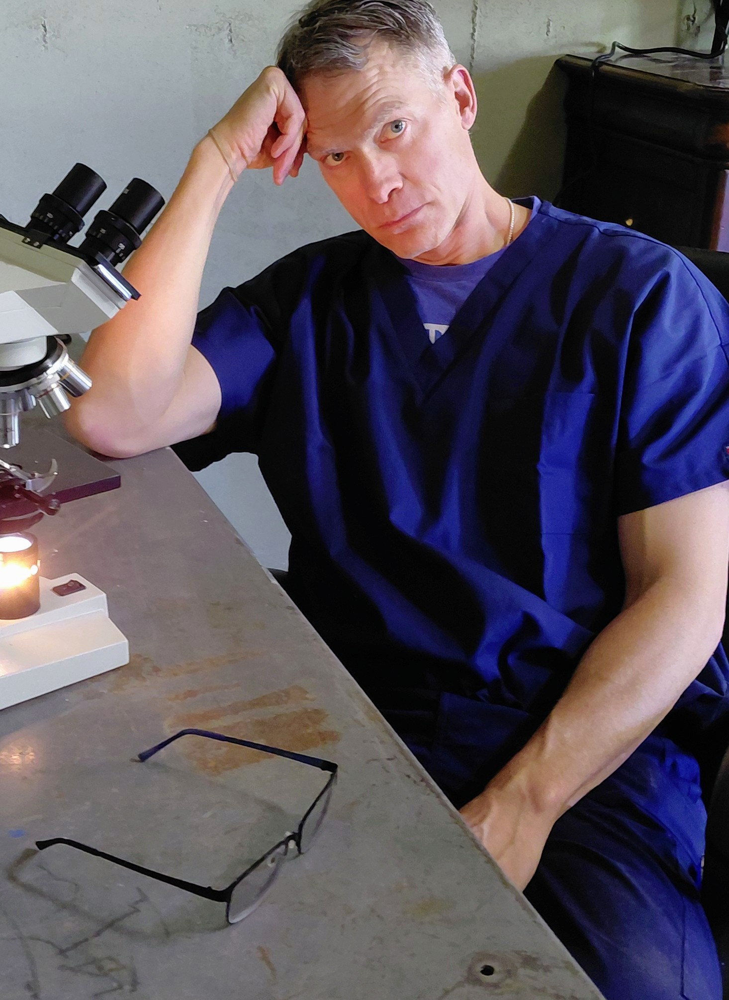
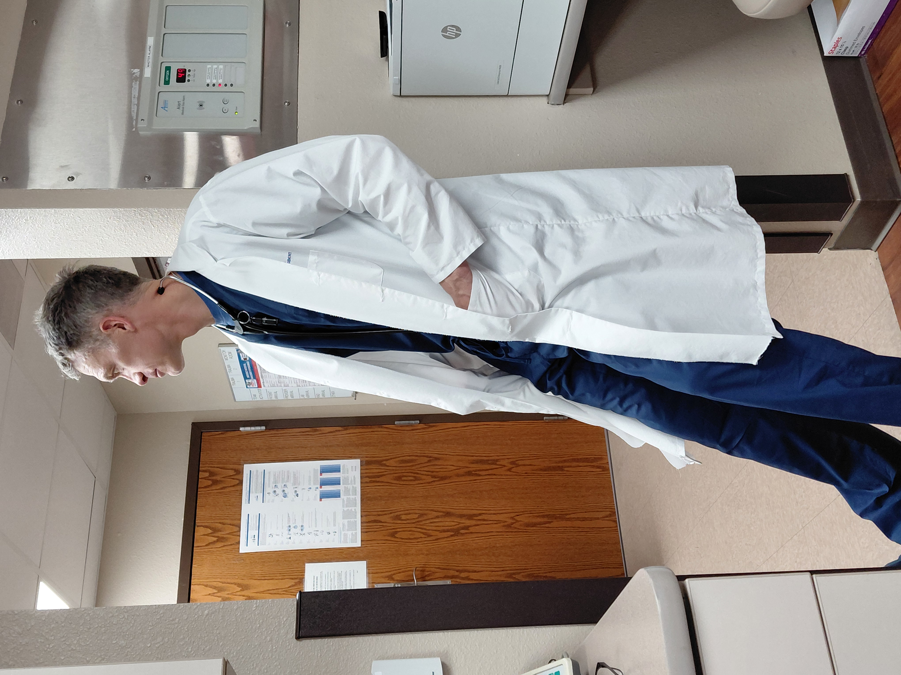

Dr. Jason James D.O.
Dedicated to Excellence in Medical Care
Dedicated to Excellence in Medical Care
Dr. James has dedicated over 25 years to advancing medical care and improving the lives of his patients. With a commitment to compassionate healthcare, he has become a trusted figure in the medical community, known for his expertise and unwavering dedication to patient well-being.
Throughout his career, Dr. James has not only focused on clinical excellence but has also been actively involved in community health initiatives. His passion extends beyond the walls of the clinic, reaching underserved communities and making healthcare accessible to those who need it most.
Dr. James received his medical degree in 2016 from the Debusk College of Osteopathic Medicine at Lincoln Memorial University. He is an internal medicine hospitalist and he serves in several medical organizations in the Nebraska Panhandle area.
Beyond his medical practice, Dr. James is committed to giving back through various charitable initiatives. He regularly organizes medical supply donations to hospitals in countries like Mexico, Dominican Republic, and Samoa. His belief that quality healthcare is a fundamental human right drives his continued efforts to make a positive impact, with hopes to expand his outreach to even more communities in need.
When not serving patients, Dr. James enjoys spending time with his family and pursuing his passions for serving others, the outdoors, and fixing cars. His dedication to continuous learning ensures that his patients receive the most up-to-date and effective treatments available.
For appointments, consultations, or inquiries, please feel free to reach out using the contact information below. Dr. James and his team are here to assist you.